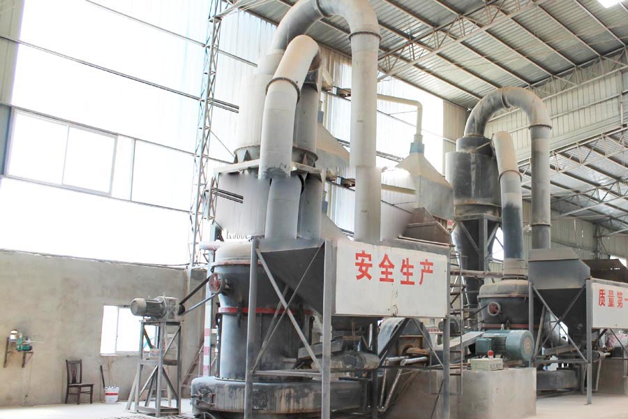

Construction waste crushing production line

Mobile construction waste crushing station for urban construction waste crushing.
Calcium Carbonate Crusher Plant
Calcium Carbonate Crusher Plant. A typical calcium carbonate production line which devices need to use ultra-fine powder of calcium carbonate in the chemical as a chemical product has a variety of uses: in power plants can be used for exhaust gas treatment; as a filler?.
An annual output of 100,000 tons of nano calcium carbonate production line items, Project Name: 100,000 tons of nano calcium carbonate production line construction project Project Unit Jincheng Xingyuan river refined calcium limited liability company established in 2009, the company covers 22,500 square meters, with fixed assets of 40 million yuan.

calcium carbonate production line
CAG Machinery (calcium carbonate production line) in mineral processing aspects widely used, many customers get more benefits, CAG product also mainly for minerals, rock crusher, mineral grinding, sand stone and mineral processing and other fields. We provide calcium carbonate production line technical guidance, based on your specific needs, for your rational design of production lines.
Calcium carbonate dryers, drying equipment, production line price, due to the special nature of the physical properties of calcium carbonate, calcium sulfate from different vendors on a final claim is not the same as moisture% ﹑ installation environment is not the same, we can specifically tailored to your calcium sulfate equipment production line non-standard models. ensure optimal drying effect.
Because the tariff is low, you can (calcium carbonate production line) to save a lot of costs, it can also be purchased to get more benefits, our products and designs for you is really value for money.
Calcium carbonate, a low-cost bulk commodity. is usually quarried and used close to source rock. It’s good quality material for the production of cement and high-grade lime. Calcium carbonate is not only the main component of marble, limestone and dolomite, it is also found in bones and teeth as well as the exoskeleton of crustaceans, coral, muscles, snails and protozoa. calcium carbonate powders are widely used in rubber,plastic, paper making, printing ink, cosmetics, toothpaste, and food industries. Calcium Carbonate Quarry Crushing Plant Calcium Carbonate Limestone (marble) crushing unit includes crushers, ball mills and air classifier powder concentrator and other machines. The final products are stone powder with mesh size 400/37 micron, 800/18 micron, 12 micron and 8 micron. And the capacity is about 2 to 4 tons per hour. Preliminary work is mainly designing. According to the characters of local stones (limestone/marble) such as humidity and rigidity, CAG has designed the complete Calcium Carbonate Limestone (marble) crushing production line which satisfy the demand for capacity. Now the complete crushing unit has been transported to there, and is being installed and debugging. Calcium Carbonate Powder Grinding Plant The feed material like crushed calcite, Aragonite, Vaterite is fed pneumatically through a venturieductor into the grinding mill. The particles are pulverized by a high speed agitated grinding media. The grinding media can be stainless steel, chrome steel, alumina or zirconia. The micronized particles are entrained in the air stream and exit the grinding mill in a high efficiency air classifier. The on size particles are separated and the oversize returned to the mill for regrinding.The grinding media does not discharge from the mill. The raw materials which are used to produce calcium carbonate can be calcite, marble, limestone,graphite, chalk, marble, travertine, dolomite, bones and teeth etc. The final powder of the grinding mill can be ground down to 3000mesh (or 5micron).
Calcium carbonate production line within 400 mesh, high pressure hanging roller mill - high pressure hanging roller mill, calcium depending on its production line process, there are heavy calcium carbonate, precipitated calcium carbonate, colloidal calcium carbonate, calcium carbonate crystals. Calcium carbonate production line jobs is natural calcite, limestone, shells and other materials.
Calcium carbonate production line equipment manufacturers. Vertical mill calcium carbonate production line to purchase, at the time of purchase of calcium carbonate vertical mill is the first device of the energy problem, which for users is crucial. Because only pay attention to the stand of the mill energy consumption, to be able to buy into desirable vertical mill calcium carbonate production line.
Leave Me A Message, Now
If you have any questions regarding equipment prices, production line configuration or other problems, you can send a message to us, we will contact you soon.